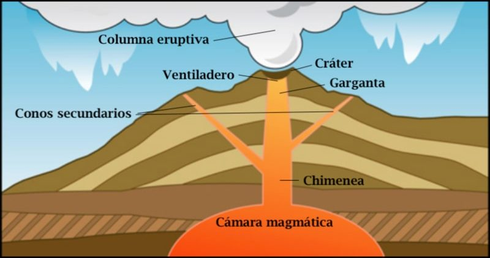

La columna eruptiva es el chorro de gas que anuncia el comienzo de una erupción volcánica. Se trata de un chorro emitido a gran velocidad,
de temperatura elevada y que alcanza una altura de entre 5 y 40 km. Las columnas eruptivas transportan fragmentos de roca denominados tefra
o piroclastos, y cenizas, en ascenso diabático. Una vez formada, la columna puede colapsarse produciendo flujos piroclásticos que descienden
por las barrancas y cañadas del volcán.
La altura de una columna eruptiva está determinada por la temperatura del material expelido y por la tasa de emisión del mismo.
Estructuralmente, una columna eruptiva está formada por una zona inferior de empuje por gases y de una zona superior convectiva.
Los gases volcánicos' son dichos gases emanados por un volcán y constituyen la mayor parte del volumen de las erupciones volcánicas.
El vapor de agua es el gas volcánico más común constituyendo normalmente más del 60% de las emisiones. El vapor de agua emanado por los
volcanes corresponde generalmente a agua de origen meteórico pero en algunos casos el agua de origen magmático puede constituir más del 50%
del vapor emitido por un volcán. Otro gas abundante es el dióxido de carbono que suele comprender de 10 a 40% de las emisiones. Otros
gases volcánicos son el sulfuro, halógenos y helio.
Los cráteres volcánicos son depresiones circulares causadas por actividad volcánica. Funcionan como abertura o boca de erupción de muchos
volcanes y están ubicados generalmente en sus cimas.
Durante las erupciones volcánicas, el magma y los gases volcánicos ascienden desde una cámara de magma subterránea, a través de un conducto
en forma de tubo, hasta llegar a la abertura del cráter, desde donde los gases escapan a la atmósfera y el magma erupciona en forma de lava.
Un cráter volcánico puede ser de grandes dimensiones y, en ocasiones, de gran profundidad. Durante ciertos tipos de erupciones explosivas,
la cámara de magma de un volcán puede vaciarse lo suficiente como para que un área sobre ella se hunda, formando un tipo de depresión más
grande conocida como caldera.
Que es la apertura de la chimenea justo en sus etapas finales.
son formaciones originadas por la acumulación de lava solidificada sobre el cono principal. Estos cuentan en su interior con una chimenea
secundaria, conectada a la chimenea principal y, a partir de los mismos, también se expulsa lava.
Existen dos clases de chimeneas volcánicas. Las usuales comunican la cámara magmática, situada dentro de la corteza terrestre con la
superficie, en inglés se refieren con el término neck. Existen otras chimeneas que comunican directamente el manto con la superficie,
sin cámara magmática, en inglés se refieren con el término pipe.
Una cámara magmática es un repositorio subterráneo de magma (roca fundida), de volumen considerable. Dentro de la cámara, el magma se
encuentra a gran presión, y con el tiempo puede llegar a fracturar la roca que lo envuelve.1 Si el magma encuentra una salida hacia la
superficie terrestre, el resultado es una erupción volcánica,2 en caso contrario, y si se enfría, formará un plutón de rocas intrusivas.
Estas cámaras son difíciles de detectar en las profundidades de la Tierra, y por lo tanto la mayoría de las conocidas están cerca de la
superficie, comúnmente entre 1 y 10 km de profundidad.